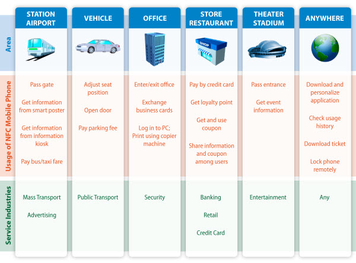

Key Benefits of NFC
NFC provides a range of benefits to consumers and businesses, such as:
- Intuitive: NFC interactions require no more than a simple touch
- Versatile: NFC is ideally suited to the broadest range of industries, environments, and uses
- Open and standards-based: The underlying layers of NFC technology follow universally implemented ISO, ECMA, and ETSI standards.
- Technology-enabling: NFC facilitates fast and simple setup of wireless technologies, such as Bluetooth, Wi-Fi, etc.)
- Inherently secure: NFC transmissions are short range (from a touch to a few centimeters)
- Interoperable: NFC works with existing contactless card technologies
- Security-ready: NFC has built-in capabilities to support secure applications
A Day in the Life
 NFC technology has the power to bring new simplicity and convenience to many aspects of a typical person's daily life, as this example illustrates:
- 7:30 - Eric gets on a train to go to his office, using his NFC-enabled phone to tap a reader and easily open the turnstile.
- 7:32 - He sees a poster announcing a free concert that evening. He touches his NFC-enabled phone to the N-Mark on the poster, which transfers the detailed information onto his phone. He reserves seats for the concert with his mobile phone, using mobile communications (e.g., SMS, internet, packet-based connections), and the complimentary tickets are sent to his mobile phone. He sends a text message to his wife to invite her to the concert and dinner.
- 8:15 - When he arrives at his office, Eric touches his NFC-enabled phone to the office gate to unlock the security mechanism.
- Noon - At lunch time, he pays for his meal using one of the credit cards stored in his phone.
- 13:00 - After lunch, Eric visits the office of his new business partner for a meeting. Those attending the meeting exchange electronic business cards, stored in their NFC-enabled phones, by touching their phones together.
- 18:00 - Eric meets his wife and they go to the concert venue. He touches his NFC-enabled phone to a turnstile at the entrance to the venue, their reservations are confirmed, and they are admitted.
- 20:00 - After the concert, they visit a shopping center, where they make a few purchases and have dinner, using their NFC-enabled phones to pay for everything.
- 22:00 - When they arrive home, Eric realizes that he left his NFC-enabled phone on the train. He immediately calls the mobile network operator and makes a request to disable all active NFC services in the phone. If his phone is later found and returned to him, he will be able to reactivate these services.